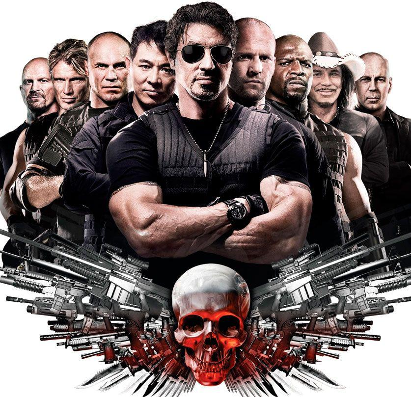

John Wick:De Volta ao Jogo
De Volta ao Jogo (John Wick, 2014) é um filme plenamente consciente dos muitos clichês de histórias de vingança e de matadores aposentados que recicla. É um sub-Drive não só na repetição de temas e de tons de neon mas também nesse suposto instinto de cinefilia que tenta resgatar os heróis americanos motorizados, da tradição de Steve McQueen
ler mais

OS MERCENÁRIO
Na trama, o grupo de "soldados da fortuna" de Barney Ross (Stallone) é contratado pelo misterioso Sr. Church (Willis) para infiltrar-se em uma ilha latina e assassinar seu ditador (David Zayas, de Dexter). Chegando lá, eles conhecem a rebelde Sandra (Giselle Itié) e descobrem a verdadeira natureza do problema. Mas quando eles enfim escapam da ilha, Sandra prefere ficar e lutar - o que desperta em Barney um sentimento de redenção que ele desconhecia.
ler mais
1917
Os soldados Blake (Dean-Charles Chapman) e Schofield (George MacKay) são escolhidos pelo exército britânico para atravessar a Terra de Ninguém em menos de um dia para entregar uma mensagem a um batalhão aliado, avisando-o de uma armadilha. O fracasso custaria a vida de 1600 soldados, incluindo o irmão de Blake. É uma premissa bastante “vídeo-gamística”, uma quest de objetivo simples e desafios claros.
ler mais
SNIPER AMERICANO
Dentro da força de operações especiais da Marinha dos Estados Unidos, os Navy Seals, tornou-se uma lenda: nas suas quatro passagens pelo Iraque, somou 165 mortes confirmadas (de um total de 255). Dono de uma mira precisa, o atirador de elite era o pastor que protegia seus colegas de ameaças aparentemente invisíveis. Fazia com que os soldados acreditassem que alguém olhava por eles nos momentos de perigo.
ler mais
TROPA DE ELITE
Ótimo que todo mundo a esta altura do campeonato já tenha visto Tropa de Elite (2007). Questões de pirataria à parte, fica mais fácil resenhar e discutir o filme quando o leitor já sabe do que estamos falando. E não há meios de ciscar em torno do trabalho do diretor José Padilha - Tropa de Elite chama todo espectador a formar uma opinião.
ler mais